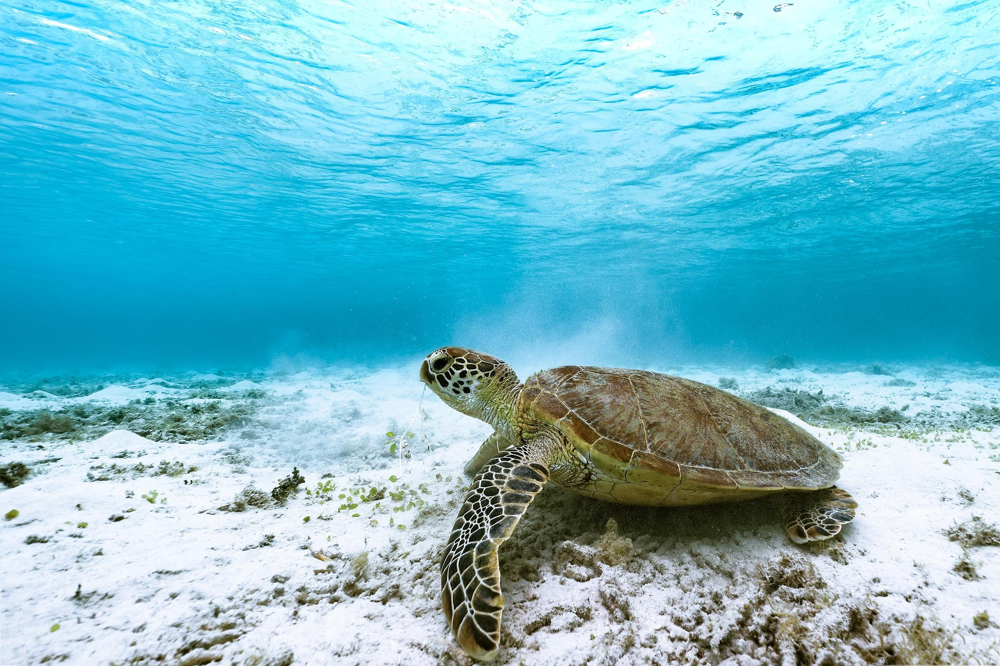
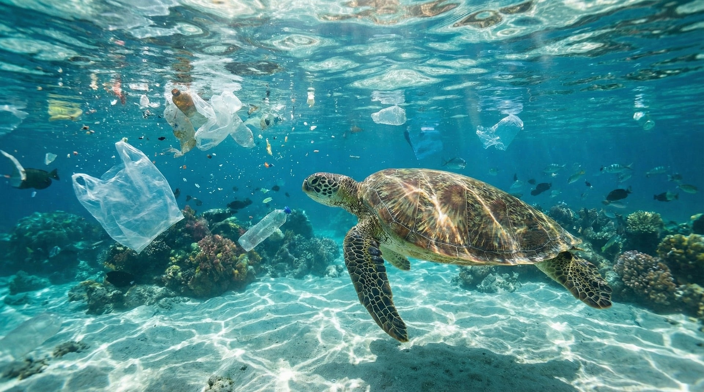
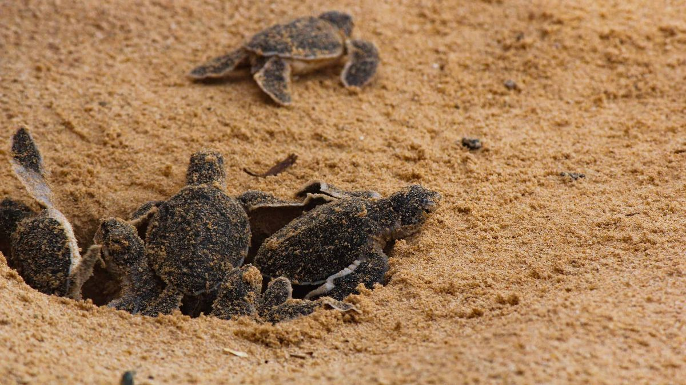

Kenali, Pahami, Lindungi
Katalog Penyu Hijau dan Penyu Sisik dilengkapi materi habitat, ancaman, perlindungan, peran ekosistem, panduan perjumpaan aman, dan pelaporan kepada petugas berwenang.
Katalog Spesies Penyu
Dua spesies fokus konservasi di perairan Komodo: Penyu Hijau (Chelonia mydas) dan Penyu Sisik (Eretmochelys imbricata).
Padang Lamun & Terumbu Karang
Dua ekosistem kunci tempat penyu mencari makan dan tumbuh dewasa.
Padang Lamun
Padang lamun adalah "kebun makan" utama penyu hijau dewasa yang bersifat herbivora. Penyu merumput secara terus-menerus sehingga lamun tetap pendek dan produktif. Padang lamun yang sehat menopang ikan-ikan ekonomis penting, menyimpan karbon biru, serta menstabilkan sedimen dasar perairan dangkal seperti di Teluk Wainilu dan perairan dangkal sekitar Taman Nasional Komodo.
Terumbu Karang
Terumbu karang menjadi habitat penyu sisik — perenang tangkas yang mencari spons di celah karang. Struktur terumbu menyediakan tempat berlindung dan area pembersihan, tempat ikan pembersih memakan ektoparasit dari tubuh penyu, serta mendukung rantai makanan yang seimbang. Menjaga terumbu berarti menjaga habitat penyu sekaligus mata pencaharian masyarakat pesisir.


Perlindungan Hukum Penyu Laut
Seluruh spesies penyu laut berstatus terancam dan dilindungi oleh instrumen internasional maupun nasional.
Ringkasan Status Perlindungan
Data simulasi demonstrasi — rujuk sumber resmi| Spesies | IUCN | CITES | Perlindungan Indonesia |
|---|
Tekanan terhadap Populasi Penyu
Populasi penyu laut menghadapi berbagai tekanan — dari aktivitas manusia hingga perubahan lingkungan global. Memahami ancaman ini menjadi dasar mitigasi yang tepat sasaran: data interaksi yang terkumpul pada PenyuGuard membantu memetakan di mana tekanan paling sering terjadi sehingga upaya perlindungan dapat diarahkan secara efektif bersama masyarakat pesisir dan pengelola taman nasional.

Peran Penyu dalam Ekosistem Laut
Penyu bukan sekadar penghuni laut — mereka adalah insinyur ekosistem yang menjaga keseimbangan laut dan pantai.
Menjaga Kesehatan Padang Lamun
Perumputan penyu hijau menjaga lamun tetap pendek dan produktif — padang lamun sehat menjadi tempat bernaung ikan ekonomis penting dan menyimpan karbon biru dalam jumlah besar.
Mengendalikan Spons di Terumbu
Penyu sisik memangsa spons sehingga mencegah spons menutupi dan mengalahkan karang pembangun terumbu — sebuah layanan ekologis yang menjaga struktur terumbu tetap beragam.
Transfer Nutrien Laut–Pantai
Saat bertelur, penyu memindahkan nutrien laut ke darat; sisa sarang dan tukik menjadi sumber makanan bagi predator pantai — menghubungkan dua ekosistem dalam satu rantai kehidupan.

Apa yang Harus Dilakukan?
Langkah aman saat menemukan penyu di alam maupun saat penyu tertangkap tidak sengaja pada alat tangkap.
Ketika Menemukan Penyu
- Jaga jarak minimal 3–5 meter — jangan mengejar atau menyentuh penyu.
- Jangan menggunakan lampu atau flash kamera pada malam hari; cahaya mengganggu penyu bertelur dan tukik.
- Jangan menunggangi, mengangkat, atau membalik posisi penyu.
- Biarkan tukik berjalan sendiri menuju laut; jangan dibantu dilempar ke air.
- Jauhkan anjing dan burung dari sarang atau tukik.
- Catat waktu, lokasi (koordinat GPS bila memungkinkan), kondisi penyu, dan perilaku yang teramati.
- Laporkan perjumpaan melalui fitur Laporkan Penyu di PenyuGuard atau langsung kepada petugas taman nasional.
- Bila penyu terlihat terluka, terdampar, atau terperangkap — jangan menanganinya sendirian; hubungi petugas berwenang segera.
Penanganan Awal Penyu Tertangkap Tidak Sengaja (Bycatch)
- Bawa penyu ke atas perahu dengan hati-hati — pegang pada sisi depan karapas, jangan pada ekor atau sirip.
- Letakkan penyu di tempat teduh dan rata; jangan membalik penyu terlentang.
- Lepaskan kait atau jaring dengan perlahan; bila tersangkut di mulut atau tertelan, jangan dipaksa — serahkan pada petugas.
- Basahi kulit penyu secara berkala dengan air laut (hindari mata dan lubang hidung); jangan menuangkan air ke mulut.
- Bila penyu lemas, letakkan bagian belakang karapas sedikit lebih tinggi agar saluran udaranya bekerja normal.
- Sebelum dilepas, pastikan penyu aktif dan perahu berada jauh dari jaring; lepaskan menghadap ke laut lepas.
- Catat jenis alat tangkap, kondisi penyu, dan lokasi kejadian, kemudian laporkan melalui PenyuGuard.
- Bila penanganan sulit dilakukan, serahkan kepada petugas Balai Taman Nasional Komodo atau BKSDA setempat.
Perkaya Wawasan Konservasi
Artikel dikelola administrator dan diperbarui berkala sebagai bahan edukasi masyarakat pesisir dan wisatawan.